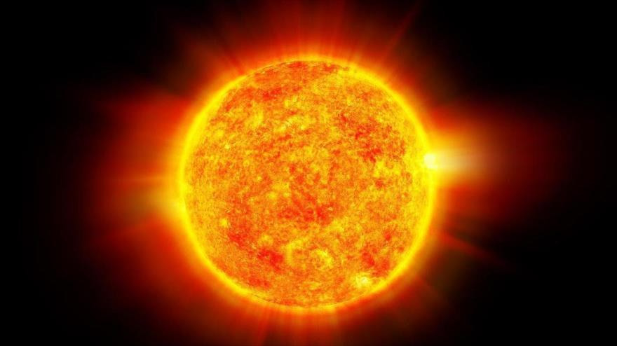

El Sol es la estrella que sostiene la vida en la Tierra!!!
El Sol es la única estrella de nuestro sistema solar. Su influencia y gravedad mantiene unido todo lo que gira alrededor de él, y su luz, calor y energía son el motor que propicia la vida en la Tierra. En este artículo te contamos todo lo que deberías conocer sobre el Sol.

El Sol, nuestra estrella, se sitúa en el centro del sistema solar y rige todo lo que sucede en su interior. Por ello, no es de extrañar que decenas de culturas a lo largo y ancho de nuestro planeta y durante el transcurso de los siglos, hallan considerado al Sol como una divinidad a la que se le ha reservado un lugar especial.
Tipos de Estrellas Solares
Podemos encontrar miles de millones de estrellas y numerosos tipos de estrellas que tienen diferentes características. Las estrellas se han estado observando desde toda la historia del ser humano, incluso desde antes de ser Homo sapiens. Ha sido una fuente de información relevante para conocer cómo es el universo, ha servido de inspiración para artistas de todo tipo y han sido utilizadas como vía para navegantes y viajeros.
Lo primero de todo es conocer qué son las estrellas y cómo se clasifican. En astronómica se definen las estrellas como esferoides de plasma que emiten luz y mantienen una estructura gracias a la acción de la fuerza de la gravedad. La estrella más cercana que tenemos en nuestro alrededor es el sol. Es la única estrella del sistema solar y la que nos aporta la luz y calor haciendo posible la vida en nuestro planeta. Sabemos que el planeta Tierra se encuentra en la zona habitable del sistema solar lo que está a una distancia idónea para ello.
Tipos de estrellas según su temperatura y luminosidad:
- O – Hipergigante
- Ia– Supergigante muy luminosa
- Ib– Supergigante de menor luminosidad
- II– Gigante luminosa
- III– Gigante
- IV– Subgigante
- V – Estrellas de la secuencia principal enanas
- VI– Subenana
- VII– Enana blanca
Tipos de estrellas según la luz y el calor:
- Estrellas hipergigantes:son aquellas que tienen una masa de hasta 100 veces la masa de nuestro sol. Algunas de ellas se aproximaban al límite teórico de masa que es el valor de 120 M. 1 M es la masa equivalente a nuestro sol. Se utiliza este nivel de medida para poder establecer mucho mejor las comparaciones entre el tamaño y la masa de las estrellas.
- Estrellas supergigantes:estas tienen una masa de entre 10 y 50M y unas dimensiones que superan 1000 veces a nuestro sol. Aunque nuestro sol parezca enorme, es del grupo de estrellas pequeñas.
Estrellas gigantes: suelen tener un radio de entre 10 y 100 veces el radio solar.
- Estrellas gigantes:suelen tener un radio de entre 10 y 100 veces el radio solar.
- Estrellas subgigantes:este tipo de estrellas son aquellas que se han formado a raíz de la fusión de todo el hidrógeno de sus núcleos. Suelen tener mucho más brillo que las estrellas enanas de la secuencia principal. Su brillo estaba entre las estrellas enanas y las estrellas gigantes.
- Estrellas enanas:forman parte de la secuencia principal. Dicha secuencia es la que engloba a la mayoría de estrellas que se encuentran en el universo. El sol de forma nuestro sistema solar es una estrella enana amarilla.
- Estrellas subenanas:su luminosidad es de entre 1.5 y 2 magnitudes por debajo de la secuencia principal pero con el mismo tipo espectral.
- Estrellas enanas blancas:estas estrellas son el remanente de otras que se han quedado sin combustible nuclear. Este tipo de estrellas es el más numeroso de todo el universo junto a las enanas rojas. Se calcula que el 97% de las estrellas conocidas pasarán por esta fase. Para temprano todas las estrellas se quedan sin combustible y acaban siendo estrellas enanas blancas.